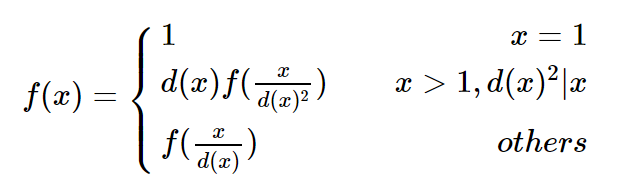

对 $x>1$ 的整数 $x$ ，定义 $d(x)$ 是满足 $y|x$（$y | x$ 表示 $y$ 是 $x$ 的约数）且大于 $1$ 的最小的整数。
有一个神奇的函数 $\rm f$ ，定义域为正整数且满足以下条件：

对于给定的 $n$， 求 $\sum_{i=1}^nf(i)$ 。
本题每个测试点有多组数据，第 $1$ 行一个整数 $T$ 表示数据组数。
接下来 $T$ 行，每行一个整数 $n$ ， 含义见题目描述。
输出 $T$ 行，每行一个整数，表示该组数据的答案。
5 4 10 233 6666 123456
5 14 513 21610 510126
对于样例1的第1组数据：
$f(1)=1\\$
$d(2)=2,\ f(2)=f(1)=1\\$
$d(3)=3,\ f(3)=f(1)=1\\$
$d(4)=2,\ f(4)=2\times f(1)=2\\$
$\sum_{i=1}^4f(i)=5$
 Comet OJ
Comet OJ